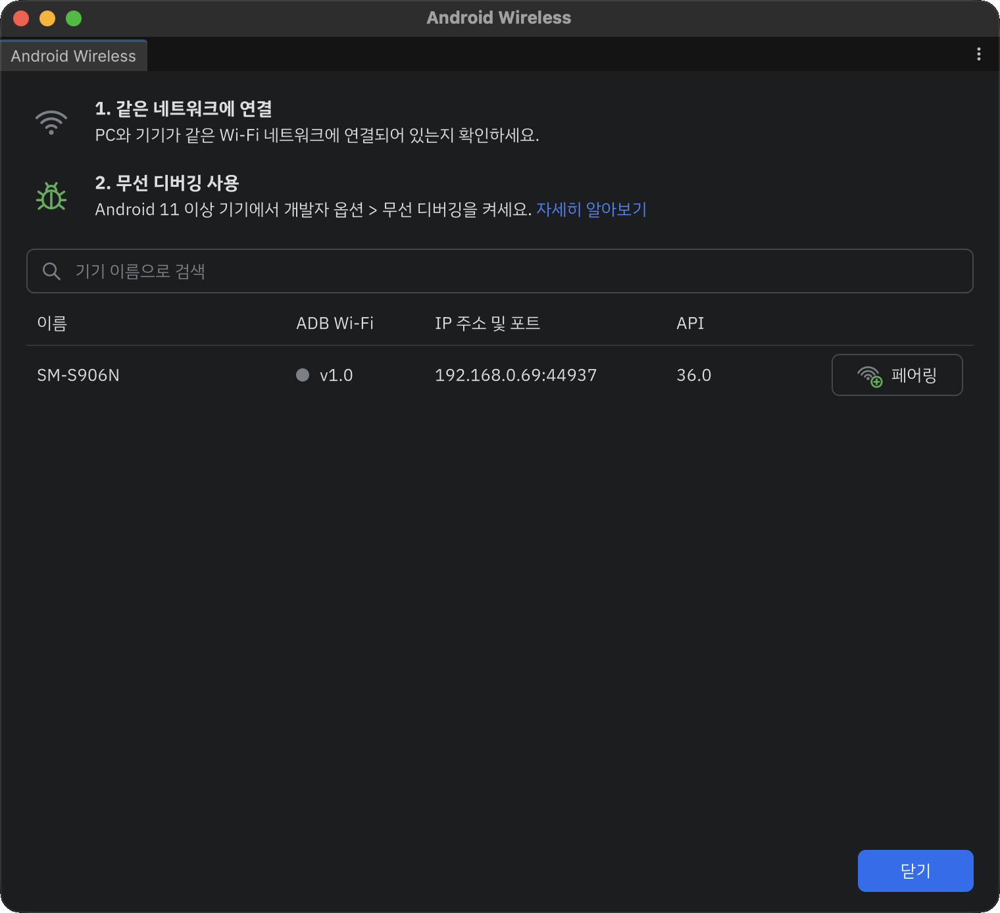
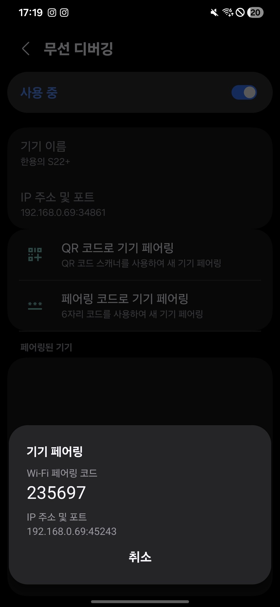

기기 연결
Android 11 이상 기기를 Wi-Fi로 페어링하고 연결합니다. 한 번 페어링한 기기는 다음부터 무선 디버깅만 켜면 다시 연결됩니다.
1. 기기 준비
- PC와 기기를 같은 Wi-Fi 네트워크에 연결합니다.
- 기기에서 개발자 옵션을 켭니다.
- 설정 > 개발자 옵션 > 무선 디버깅을 켭니다.
- 현재 네트워크에서 무선 디버깅을 허용할지 묻는 창이 뜨면 허용을 누릅니다.
2. 창 열기
Unity 메뉴에서 Tools > Android Wireless Pairing을 선택합니다. 처음 열면 테마 선택 화면이 나옵니다. 자세한 내용은 설정을 참고하세요.
3. 기기 목록
무선 디버깅이 켜진 기기가 목록에 자동으로 나타납니다. 새로고침할 필요가 없습니다.

| 열 | 설명 |
|---|---|
| 이름 | 기기 이름 |
| ADB Wi-Fi | 기기가 지원하는 ADB Wi-Fi 버전. v1.0은 회색, v2.0은 초록 원으로 표시합니다. |
| IP 주소 및 포트 | 기기의 무선 디버깅 주소 |
| API | Android API 레벨 |
- 이미 연결된 기기는 페어링 버튼 대신 연결됨으로 표시됩니다.
- 위쪽 검색창에 기기 이름이나 IP를 입력해 목록을 좁힐 수 있습니다.
Note
기기 이름·API·ADB Wi-Fi 버전은 Platform-Tools 36 이상에서만 표시됩니다. 요구 사항을 참고하세요.
4. QR 코드로 페어링
- 목록에서 기기의 페어링 버튼을 누릅니다. QR 코드로 페어링 탭에 QR 코드가 표시됩니다.
- 기기에서 개발자 옵션 > 무선 디버깅 > QR 코드로 기기 페어링을 누르고 QR 코드를 스캔합니다.
- 페어링과 연결이 자동으로 진행되고, 완료되면 연결 성공 화면이 나타납니다.


5. 페어링 코드로 페어링
QR 코드를 스캔할 수 없을 때 사용합니다.
목록에서 기기의 페어링 버튼을 누르고 페어링 코드로 페어링 탭을 선택합니다.
기기에서 개발자 옵션 > 무선 디버깅 > 페어링 코드로 기기 페어링을 누릅니다. 기기에 6자리 Wi-Fi 페어링 코드가 표시됩니다.

창의 페어링 가능한 Wi-Fi 기기 목록에 기기가 페어링 가능으로 나타납니다.

페어링을 누르고 기기에 표시된 6자리 코드를 입력합니다.
- 한 칸을 입력하면 다음 칸으로 자동 이동합니다.
- 아무 칸에나 코드를 붙여넣으면(Ctrl/Cmd+V) 한 번에 채워지고 바로 제출됩니다.

페어링과 연결이 끝나면 연결 성공 화면이 나타납니다.
연결 성공 화면에서 다른 기기 페어링을 누르면 목록으로 돌아갑니다.
페어링 해제
기기에서 개발자 옵션 > 무선 디버깅 > 페어링된 기기를 열고 PC를 선택한 뒤 삭제를 누릅니다. 모든 PC의 페어링을 한 번에 해제하려면 개발자 옵션 > USB 디버깅 권한 승인 취소를 누릅니다.